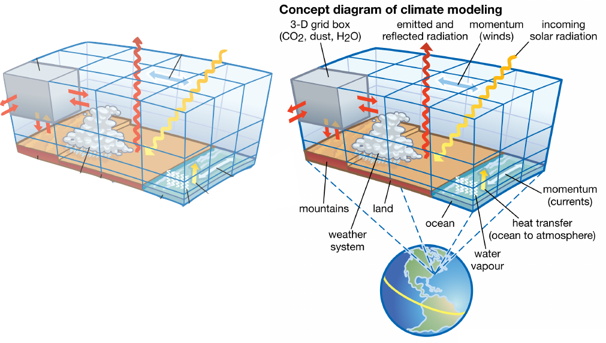
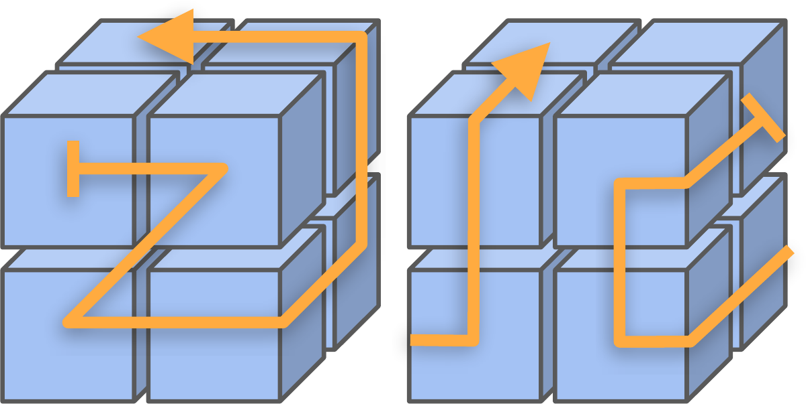

class: center, middle # Verlustfreie Kompression von Klimadaten mit Machine Learning ## Masterarbeit --- # Einführung ## Problem Die Klimawissenschaften generieren sehr hohe Datenmengen (zur Zeit ca. 770 TiB) ## Aktuelle Lösung Reduzierung der zeitlichen Auflösung und gespeicherten Variablen ## Folgen - Klimaereignisse möglicherweise nicht abgebildet - Benutzung von Interpolationen - Neuberechnung von Simulationen --- # Klimadaten - 4D Daten (Längen- u. Breitengrad, Höhe, Zeit) .center[] --- # Kompression - Vorhersagebasierte Kompression ist am erfolgreichsten für Klimadaten (bei verlustfreier Kompression) - Ablauf (vereinfacht) - Berechnung einer Vorhersage für jeden einzelnen Datenpunkt - Berechnung des Residuums - Kodierung des Residuums, sowie der Travesierungs- und Vorhersageverfahren .center[] --- # Wissenschaftliche Fragestellungen - Welche Abhängigkeit besteht zwischen Traversierung und Vorhersage? - Wie kann die Traversierung auf die Daten bzw. ihre Vorhersagbarkeit abgestimmt werden? -- - Welche Feature können für das Lernen der Vorhersage verwendet werden? - Breite- u.Längengrad, Höhe - Lokale Uhrzeit und Jahreszeit - Land/Wasser - Variablenabhängigkeit (Temperatur, Wasserdampf, Luftfeuchte) - Wie können diese Feature kodiert werden? -- - Wie kann die Kodierung performant gestaltet werden? - Parallelisierung durch Datenblöcke? - Entropy-basierte Verfahren? --- # Aufgaben - Einarbeitung in die Datenformate netCDF und HDF5. - Evaluation von ML-Verfahren für die Vorhersage von Datenpunkten (z.B. supervised, unsupervised, reinforcement learning). - Engineering der Codierungspipeline bzgl. Performance und Kompression. --- # Stand der Technik .sdt[ - Lossless Image Compression through Super-Resolution [2020, .scheme5[\#image]] - High-Fidelity Generative Image Compression <br> [2020, .scheme5[\#image]] - Estimating Lossy Compressibility of Scientific Data Using Deep Neural Networks [2020, .scheme2[\#float]] - Adaptive Deep Learning based Time-Varying Volume Compression [2020, .scheme2[\#float]] - Wavefield compression for seismic imaging via convolutional neural networks [2019, .scheme2[\#float]] - Lossless Data Compression with Neural Networks <br> [2019, .scheme3[\#text]] - DeepFovea: Neural Reconstruction for Foveated Rendering and Video Compression using Learned Statistics of Natural Videos [2019, .scheme4[\#video]] ]